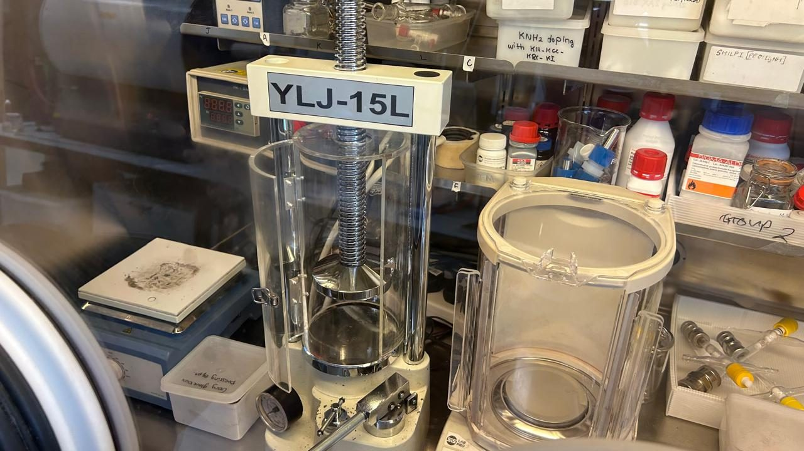
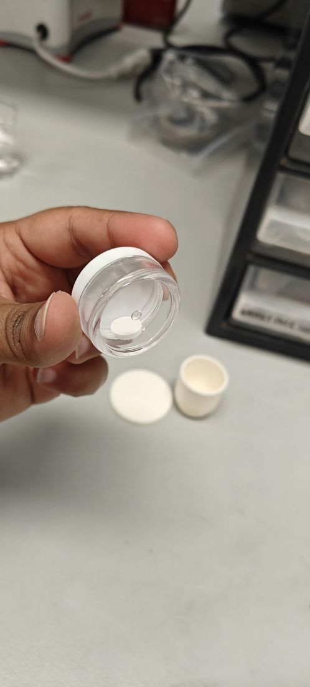
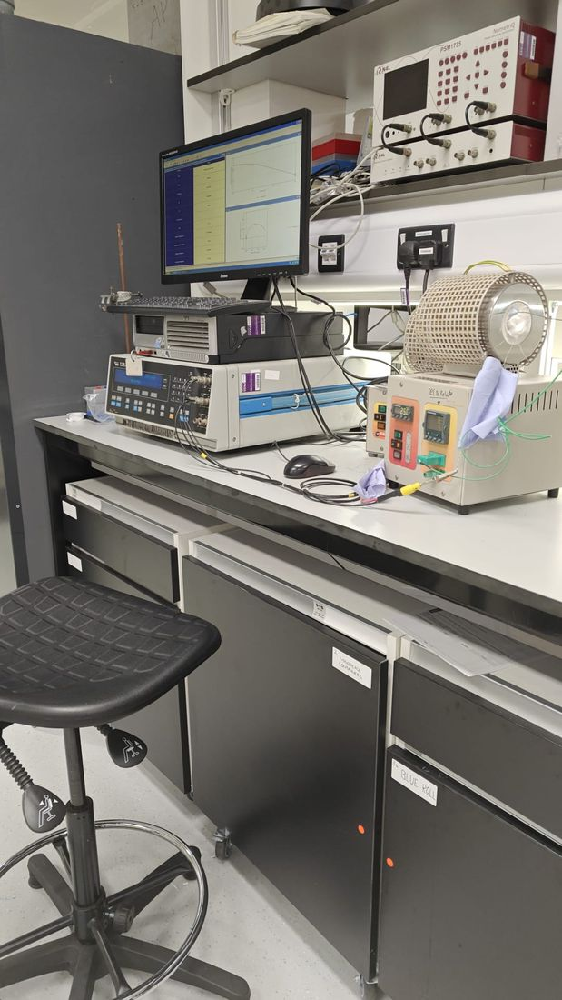
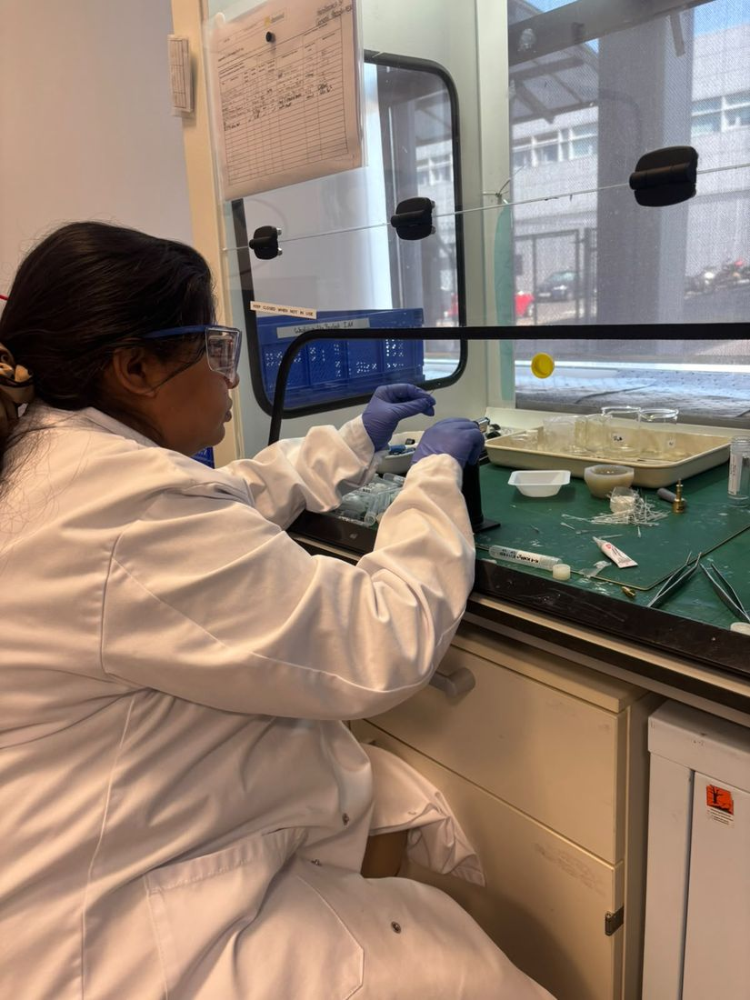
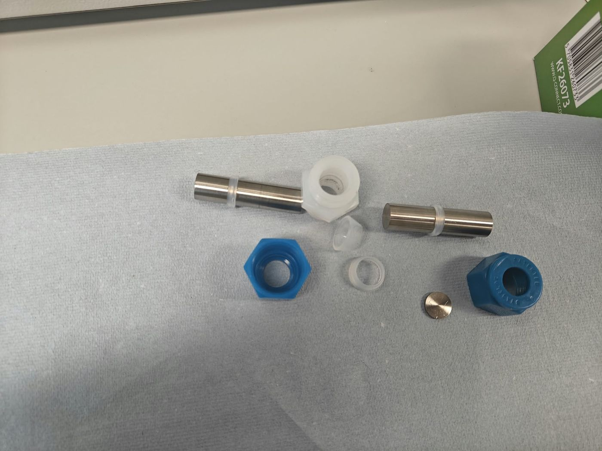
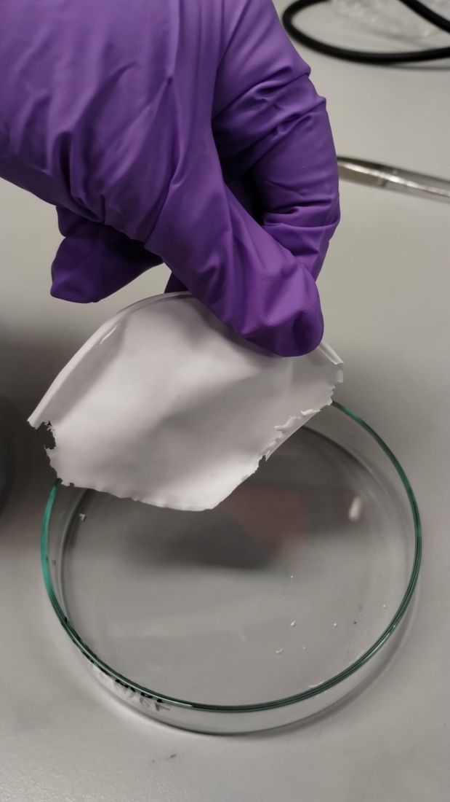
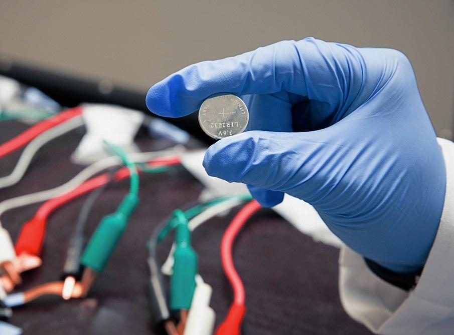
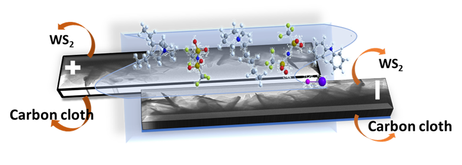
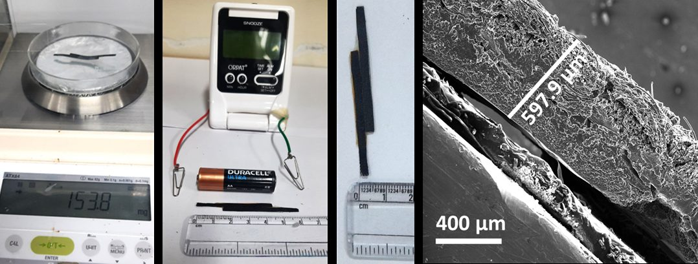

Where materials chemistry meets electrochemical engineering.
I am a Postdoctoral Research Fellow at the University of Birmingham. My research lies at the intersection of materials chemistry, electrochemical engineering and next-generation energy storage, with a particular focus on developing solid-state electrolytes for lithium-ion and potassium-ion batteries.
Curiosity, a glovebox, and a lot of impedance spectra.
I have always been fascinated by how the smallest details of a material can make a big difference to its performance. What happens inside a crystal when ions move through it? How can changing the shape or structure of a material improve its properties? And how can we take something we develop in the laboratory and turn it into a device that actually works? These are the kinds of questions that keep me curious about research.
I’m currently a Postdoctoral Research Fellow at the University of Birmingham, where I work on solid-state electrolytes for lithium-ion and potassium-ion batteries. My research takes me from the fundamentals of chemistry — exploring crystal structures and synthesising ceramic materials such as lithium imide and LTAP-type systems — to fabricating pellets and investigating their ionic conductivity using electrochemical impedance spectroscopy (EIS). My work is based on air-sensitive samples, so my best friends are the glovebox and the dry room.
But my interests go beyond ceramic electrolytes. I’m equally excited about polymer-based and hybrid electrolyte systems, and particularly interested in how we can combine different materials to develop electrolytes that are flexible, practical to process, and potentially easier to translate into real-world applications.
One of the things I enjoy most is bringing materials to life through device fabrication: taking a material from the synthesis stage, understanding its properties, and eventually incorporating it into a small, flexible device that I can test and improve. For me, research becomes especially exciting when I can see how the chemistry connects to something tangible.
Another area I genuinely enjoy is nanostructuring — exploring different morphologies, experimenting with synthesis techniques, and discovering how the shape, size, porosity and architecture of a material influence its behaviour. There is always something new to learn when you try a different approach, and I find that process of exploring, optimising and understanding materials incredibly rewarding.
And then there is electrochemistry — one of my favourite parts of research! I particularly enjoy working with EIS and galvanostatic charge–discharge measurements, interpreting the data, and figuring out what is really happening inside a material or device rather than simply looking at the numbers.
This website brings together my research, the materials I work with, the techniques I use and the devices I help develop. More than anything, it reflects how I approach science: with curiosity, a willingness to experiment, and a constant desire to understand how things work.



What the work looks like, day to day.
Systematic, data-driven experimentation — from formulation and cell assembly to post-mortem structural analysis.
Solid-state & hybrid electrolytes
- Lead experimental research into advanced solid-state and hybrid electrolyte systems for lithium-ion and emerging post-lithium-ion batteries, with emphasis on materials optimisation, ion transport and electrode/electrolyte interfaces.
- Design and execute electrochemical experiments to investigate ion-transport behaviour and electrode–electrolyte interfaces using EIS, cyclic voltammetry, galvanostatic cycling and rate-performance measurements.
- Develop polymer–ceramic composite electrolytes, optimising formulations through iterative, data-driven experimentation to improve conductivity, cycling stability and interfacial compatibility.
- Fabricate and evaluate cells under inert atmosphere, including electrolyte preparation, coin-cell assembly and electrochemical testing.
- Investigate performance-limiting mechanisms by correlating electrochemical behaviour with structural and surface analysis (XRD, XPS, SEM, TEM, Raman).
- Interpret electrochemical and materials datasets to identify formulation and processing changes that drive evidence-based optimisation.
Electrodes & flexible devices
- Developed 3D graphene/WS2/CNT hybrid electrodes and optimised electrode architecture to improve energy density, cycling stability and flexibility.
- Designed ionic-liquid-based gel polymer electrolytes for high-voltage flexible devices and evaluated their electrochemical performance.
- Fabricated flexible supercapacitor prototypes, taking materials and electrolyte formulations all the way through device fabrication and validation.



Three pillars, from material to device.
P—01Electrode Material Synthesis
I synthesise and investigate nanostructured anode materials for electrochemical energy storage, exploring how composition, morphology and structure influence electrochemical performance.
Core expertiseMaterial synthesis, morphology control, structural characterisation and structure–performance relationships.

Materials Characterisation & Porosity
I investigate the structural and morphological properties of synthesised materials to understand their suitability for battery applications.
Core expertiseBET surface-area and porosity analysis, high-resolution scanning electron microscopy (HRSEM), X-ray diffraction (XRD) and microscopy-based morphology assessment.
Electrode Processing & Fabrication
I translate synthesised active materials into battery electrodes through slurry preparation, coating onto current collectors, drying, calendering and electrode cutting.
Core expertiseElectrode preparation and processing, coating uniformity, electrode handling and preparation for cell assembly.
Cell Fabrication & Electrochemical Testing
I assemble electrochemical cells using prepared electrodes and evaluate their performance through cyclic voltammetry (CV) and charge–discharge testing.
Core expertiseCell fabrication, electrochemical characterisation, cycling evaluation and interpretation of electrochemical behaviour.
P—02Solid-State Electrolytes for Next-Generation Batteries
Research focus
Development and characterisation of solid-state electrolyte materials for lithium-ion and potassium-ion battery systems.
My contribution
- Synthesised and processed electrolyte materials.
- Investigated crystal structure and phase composition.
- Evaluated ionic conductivity using electrochemical impedance spectroscopy (EIS).
P—03Electrode Engineering, Device Fabrication & Prototyping
I work on translating synthesised active materials into functional electrodes and energy-storage devices, from selecting suitable binders and polymers to optimising slurry formulations and coating methods according to the requirements of the application. My experience includes coating electrodes onto current collectors, drying, calendering, electrode cutting and assembling cells for electrochemical evaluation.
I am interested in developing and prototyping devices by tailoring electrode architecture, polymer selection and processing conditions to achieve the desired performance. For battery systems, I also consider electrode mass loading, areal capacity and the negative-to-positive electrode capacity (N/P) ratio to support balanced cell design and effective utilisation of both electrodes.
Core expertise
A device you can weigh on a balance.
Prototype devices built on flexible carbon cloth with ionic-liquid polymer electrolytes — light, thin, and characterised from schematic to cross-section.

